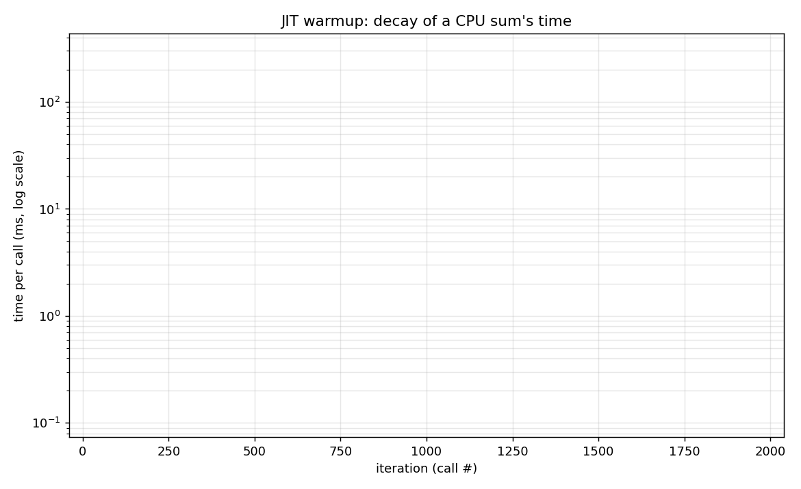
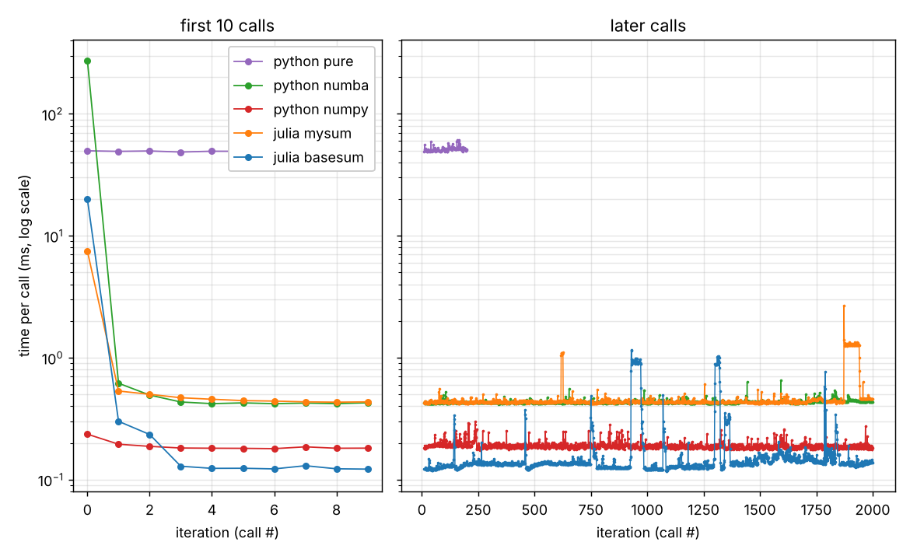

1 — Measure before optimizing
Compilation, reliable timings, and whole-program speedup
Measure, verify, choose
- Explain first-call and warmed-up times. Loop activity
- Record a measurement protocol and check the result.
- Choose a block using whole-program speedup. Diagnostic activity
Previous: Julia syntax · Optional: compiler, SIMD
The loop to compare
Same sum of 10⁶ Float64 values: how does execution time depend on the implementation?
The comparison protocol
- Five reference variants: Python loop, NumPy, Numba; Julia loop, Julia
sum. - Input: 10⁶ Float64 values, generated before timing.
- Two measurements: first call, then warmed-up calls on the same machine.
Predict the ordering and the first-call effect before running.
✏️ What does a loop cost?
- Question: same sum: Python loop,
numpy,numba. How far apart? What does the first call cost? - Predict: your ranking and one speedup, before running.
- Do: fill the two functions, check the assertion.
- Write down: first call · warmed-up times · speedups · one sentence explaining the gap.
🐍 Python (Colab) · local .py · Julia · 20 min
First call and subsequent calls




Debrief: first call and warmed-up calls
Course laptop, 10⁶ Float64 values: per-call elapsed times (rounded).
| Variant | First call | Warmed-up median |
|---|---|---|
| Python loop | 49.7 ms | 51.2 ms |
| NumPy | 0.236 ms | 0.186 ms |
| Numba | 274 ms | 0.443 ms |
| Julia loop | 7.47 ms | 0.458 ms |
Julia sum |
19.9 ms | 0.136 ms |
Compare your results. Which variants have a first-call cost? Which warmed-up speedups differ?
Where does the loop run?
| Approach | Loop execution | Compilation |
|---|---|---|
Python for |
Interpreter | No native compilation of this loop |
| NumPy | Compiled library | Before execution |
| Numba / Julia | Compiled code | First call for the argument types, if needed |
NumPy provides compiled operations; Julia and Numba also compile your own loops.
Measuring execution time
Pitfall 1: including compilation without saying so
Report the first call separately from warmed-up calls.
Pitfall 2: relying on one measurement
Record the measurement protocol
| Field | Record |
|---|---|
| Correctness | Check and tolerance |
| Input | Size and element type |
| Environment | Hardware, software versions, workers/threads |
| Protocol | Warmup, repetitions, reported statistic |
| Timed scope | Included and excluded costs |
Use the same machine to compare implementations.
Checking the result
Measuring the π estimator
Two complementary checks
- Counting logic: fixed points with a known count.
- Estimator: error consistent with its standard error, approximately \(1.64/\sqrt{n}\).
A statistical tolerance complements the code check; it does not replace it.
Which block should we optimize?
Local speedup and whole-program speedup
A block takes a fraction \(f\) of the time and becomes \(s\) times faster:
\[\text{whole-program speedup} = \frac{1}{(1-f) + f/s}\]
Which change helps more?
- A: 10% of the time, 10× faster.
- B: 80% of the time, 2× faster.
✏️ Diagnose before optimizing
- Question: which stage should we optimize?
- Predict: the whole-program speedup from the baseline timings.
- Do: implement, check the output, then measure.
- Write down: stage times · local/overall speedups · protocol.
🐍 Python (Colab) · local .py · 20 min
Debrief: local and overall speedups
- Compare the predicted and observed whole-program speedups.
- Explain the A/B example: 1.10× versus 1.67×.
- Identify the next stage to investigate after the change.
Report speedup on the block and on the whole program.
Four rules for reliable comparisons
- Distinguish first-call and warmed-up times.
- Report the measurement protocol.
- Check the code and the statistical result.
- Measure whole-program speedup, not only the block.
Optional — type specialization
Specialization by argument types
| Arguments | Machine operation for x + y |
|---|---|
Int, Int |
Integer addition |
Float64, Float64 |
Floating-point addition |
Float64, Int |
Conversion, then floating-point addition |
A compiled specialization can resolve operations using the argument types.
Watching the compiler
Try
f(3.0)andf(3). What changes?
▶ Script: cells “4. Optional — type specialization” to “Step 3, with an Int”
Same f, two compilations
Inspecting the π estimator’s types
Which types are inferred? The dispatch module examines the cost of unknown types.
Optional — SIMD reductions
Why is sum faster?
Separate reference experiment: 10⁵ Float64 values, warmed-up timings:
| Implementation | Time per call |
|---|---|
mysum |
44 µs |
Base sum |
7.5 µs |
Which instructions and how many accumulators does each reduction use?
Scalar and SIMD reductions
Addition order matters
Why does the compiler preserve the order of our floating-point reduction?
Floating-point addition is not associative. Reordering can change the result.